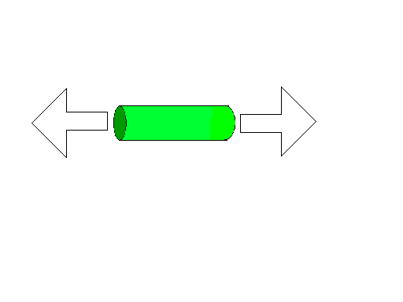
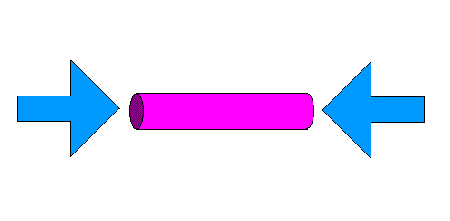
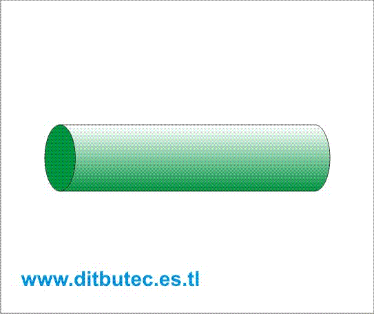
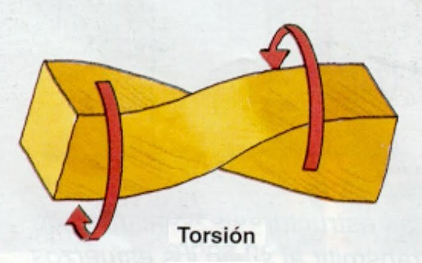

Tipos de esfuerzos
Definición:
Llamamos esfuerzos a las fuerzas que aparecen en los elementos de una estructura como consecuencia de estar sometida a cargas o fuerzas externas.
Todos estos esfuerzos se dan en los diferentes elementos estructurales combinados, pero para su mejor entendimiento, los analizaremos de forma individual y destacando el elemento estructural donde predomina un tipo de esfuerzo.
TRACCIÓN. Un elemento está sometido a un esfuerzo de tracción, cuando sobre él, actúan fuerzas que tienden a aumentar su longitud, es decir, a estirarlo.

COMPRESIÓN. Un elemento está sometido a un un esfuerzo de compresión, cuando sobre él, actúan fuerzas que tienden a disminuir su longitud, es decir, a comprimirlo.

FLEXIÓN. Un elemento está sometido a un esfuerzo de flexión, cuando sobre él, actúan fuerzas que tienden a doblarlo.

CIZALLA O CORTADURA. Un elemento está sometido a un esfuerzo de cortadura o cizalla, cuando las fuerzas que actúan paralelamente a su sección tienden a cortarlo. Es decir, tienden a desplazar una sección con respecto a la otra.

TORSIÓN. Un elemento está sometido a un un esfuerzo de torsión, cuando existen fuerzas sobre él qur tienden a hacer girar una sección con respecto a la otra, es decir, tienden a retorcelo.

A continuación tenemos un enlace la web de Tecnología del IES Bahía de Algeciras, donde tenemos un resumen de estos conceptos:
http://www.iesbahia.es/departamentos/Tecnologia/estructuras/tipos_de_esfuerzos.html
Obra publicada con Licencia Creative Commons Reconocimiento No comercial Sin obra derivada 4.0